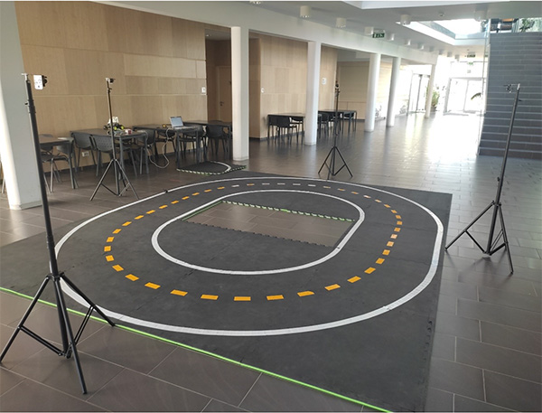

 My name is Mate Vagner, and my work in the project consist of the car's 3D localization with Marvelmind localization sensors. I co-worked on the Marvelmind system's integration into our project and created a program, what can digitalize the used track’s. Combining this digitalized car and track position data, we developed an algorithm, what returns the car’s lane-based, normalized position on the track, what can be used for training data filtering and behavior control. With this algorithm, and with a pre-trained network, we plan to use reinforced learning to make the autonomous vehicle’s driving accuracy even better.